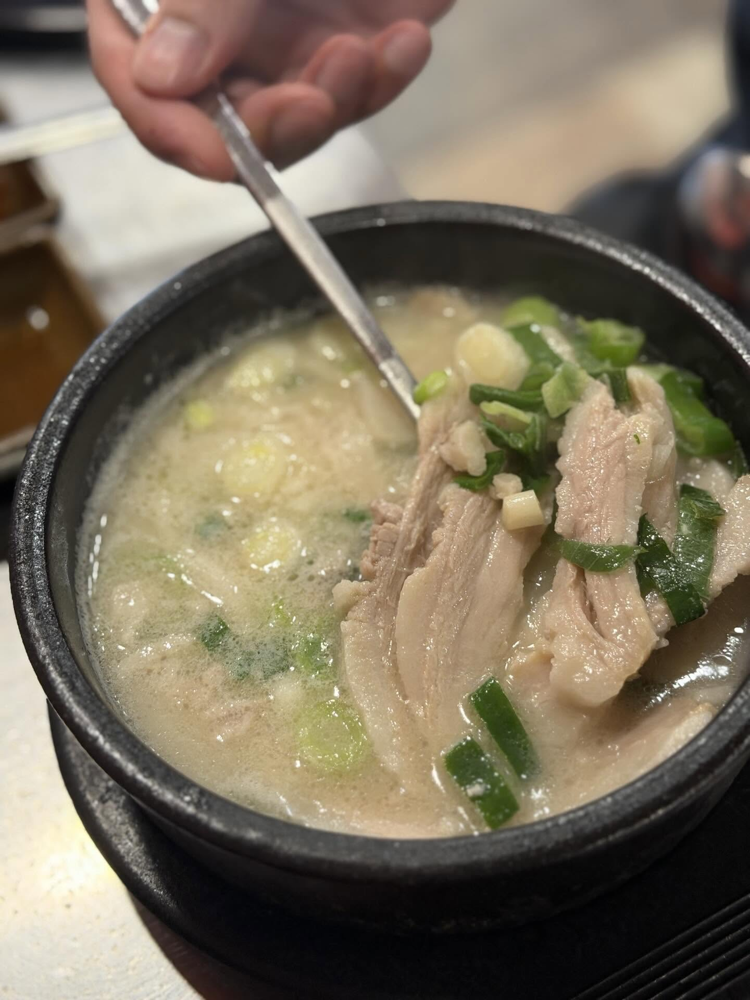
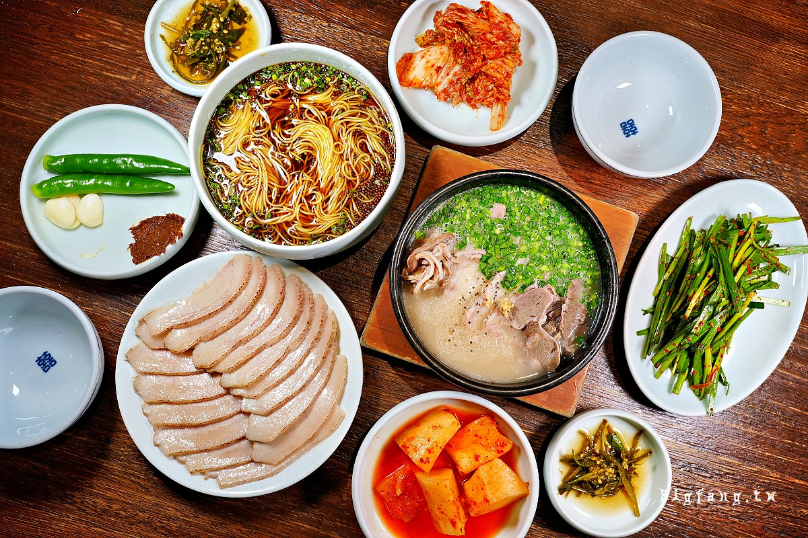
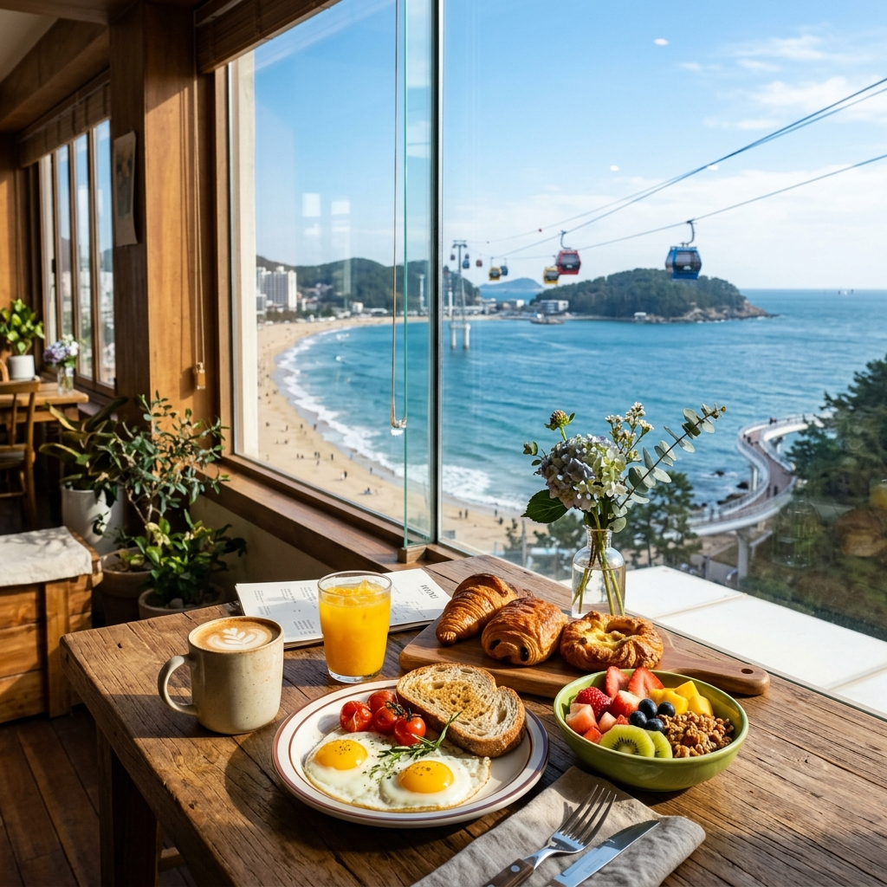
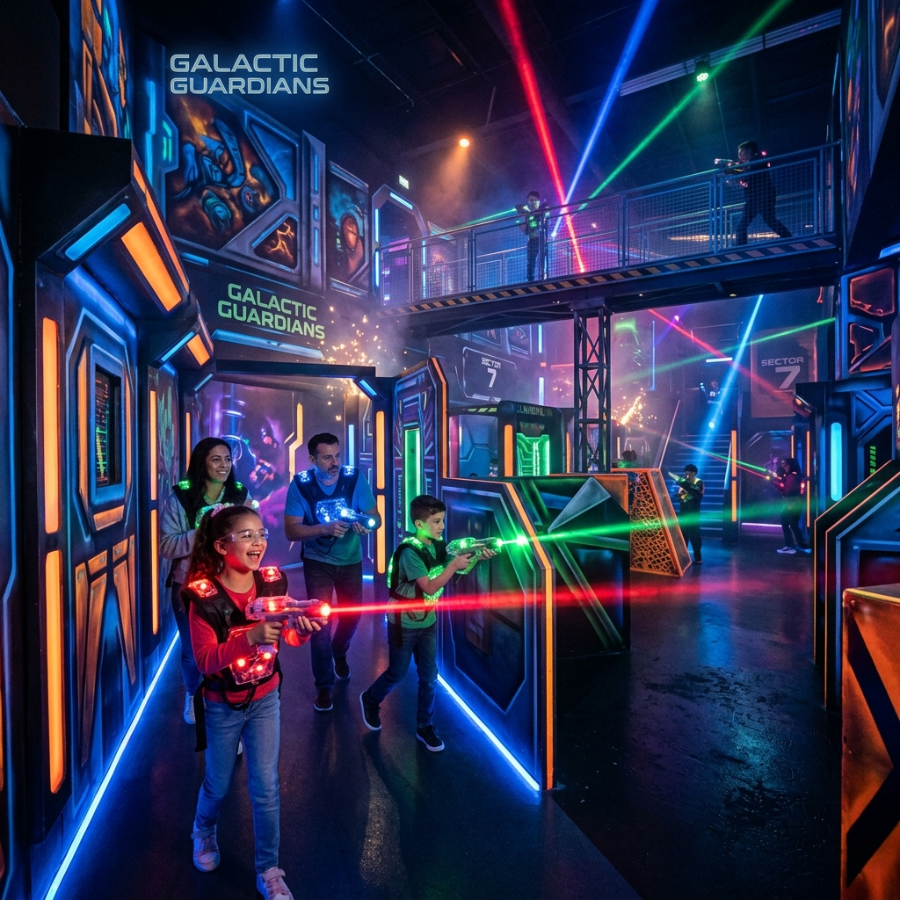
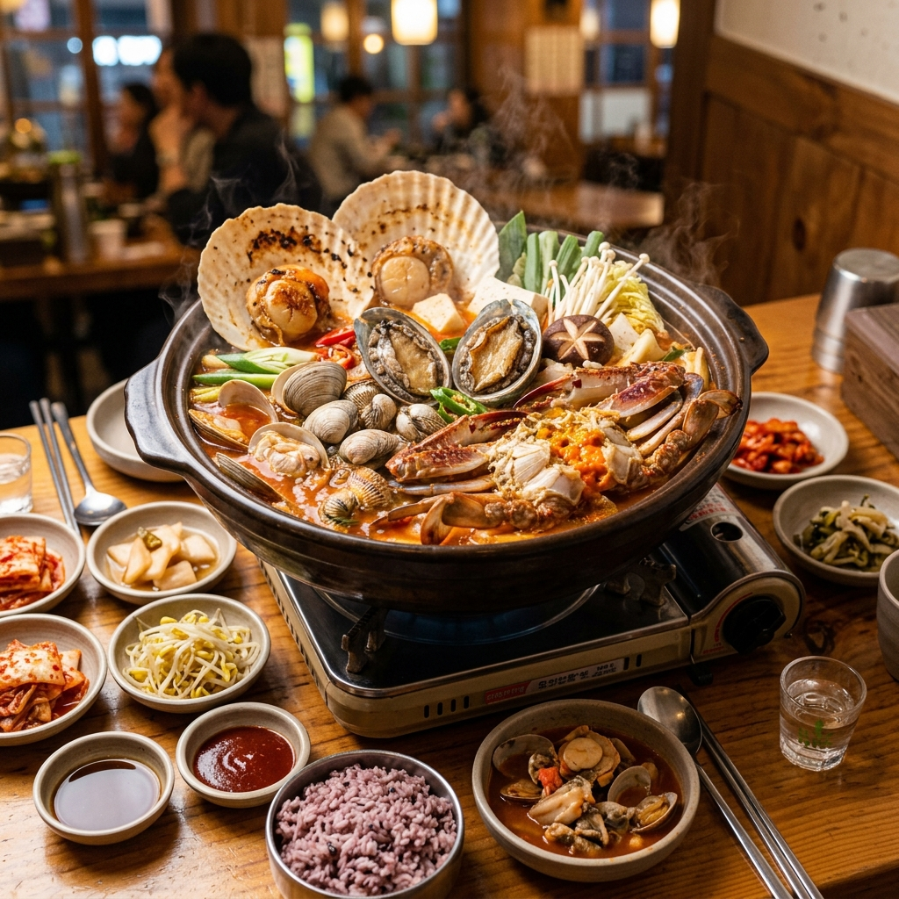

每日精彩行程
翻開我們的彩色相簿，細數每一天的歡樂

午餐：機場享用 Lotteria 漢堡
下飛機後的第一餐，我們在機場享用韓國本土最受歡迎的連鎖漢堡品牌 Lotteria！品嚐經典的雙層韓牛堡、酥脆的蝦餅堡與牽絲的超長起司條，簡單快速又充滿道地韓式風味，為我們的旅程注入第一道美味能量！
首爾 KTX 移動到釜山 (含 AREX)
享用完漢堡後，全家人一起搭乘舒適快捷的機場快線 AREX 直達首爾站，接著順利轉乘韓國高鐵 KTX 一路奔向熱情的海濱城市釜山！看著窗外飛速掠過的風景，分享著對這幾天行程的期待，一路上充滿了家人的歡聲笑語。
SPA Land 汗蒸幕
抵達釜山後，我們直奔新世界百貨內頂級豪華的 SPA Land！體驗各式溫度的天然溫泉池與獨具特色的黃土房、食鹽房等汗蒸幕設施。全家人一起包上可愛的羊角頭毛巾，喝著冰涼的甜米露、吃著溫泉蛋，徹底洗去坐飛機與高鐵的旅途疲憊！


晚餐：連鎖大醬湯 (옥된장 부산센텀시티점) ➔
第一天晚餐我們前往人氣連鎖大醬湯店「옥된장 (釜山 Centum City 店)」。在桌上現煮滾燙、香氣濃郁的牛肉大醬湯，搭配肥美多汁的五花肉片與豐富的韓式醃漬小菜。每一口香辣醇厚的大醬湯澆在熱騰騰的白飯上，美味得讓全家人都讚不絕口！
大海鮑魚粥
早晨醒來，全家人一起享用一碗熱騰騰、香氣濃郁的鮑魚粥。綿密的粥底鎖住了滿滿的鮑魚鮮甜與濃厚的營養，溫暖了每個人的胃。暖胃又暖心的精緻滋味，為我們今天豐富的冒險行程注滿了元氣與活力！
釜山 X the Sky
登上釜山地標高空觀景台，站在驚險刺激的透明玻璃步道上，將整片漫長的海雲台海岸線與亮麗的市區繁華景色盡收眼底。彷彿漫步在雲端，看著天際線與蔚藍海天交織，全家一起拍下高空雲端合照！


天空膠囊列車
上午11點，坐上超可愛的彩色天空膠囊列車！全家人擠在小巧精緻、充滿復古童趣的車廂裡。沿著海岸軌道緩緩行駛，一邊看著無邊無際的果凍色蔚藍大海，一邊開心地擺拍各種溫馨又搞怪的合照，海風與我們家人的笑聲交織在此刻最美的回憶中。
青沙浦 Diart Coffee 吃小點心
乘著膠囊列車抵達青沙浦後，我們漫步來到海邊極具質感的 Diart Coffee 咖啡廳。坐在面海的窗前，全家一邊看著蔚藍的海景，一邊享用精緻的手沖咖啡、香甜的鬆餅與特色小點心。在旅途中放慢腳步，享受一個愜意溫馨的午後。
釜山斜坡車 Skyline Luge
超刺激好玩的斜坡滑車！全家人戴上色彩繽紛的安全帽，化身小小賽車手，在彎曲的賽道上御風呼嘯而下。不論是領先者的歡呼，還是落後者慌亂的大笑，這些快樂與刺激都成為了我們家族專屬的競賽趣味。
5點晚餐：Ribs of Legend haeundae 烤肋排
晚餐時間，我們來到海雲台超人氣的烤肋排店 Ribs of Legend ➔。 在燒燙的炭火上，滋滋作響的特製醃排骨散發出誘人的焦香，肉質鮮嫩多汁。全家人一邊生菜包肉一邊開心大嚼，分享著這兩天在釜山累積的滿滿歡笑，這頓烤肉大餐溫暖了每個人的心與胃！


海雲台傳統市場
吃飽喝足後，全家一邊散步一邊逛逛熱鬧的海雲台傳統市場。這裡香氣四溢，到處都是道地的釜山在地小吃：傳統市場熱鬧的街景、熱氣騰騰的辣炒年糕、令人垂涎的現烤海鮮，體驗釜山夜晚最熱情純樸的庶民活力！
晚上9點：The Bay 101 乘遊艇賞夜景
晚上9點，我們來到海雲台最知名的夜景聖地 The Bay 101。全家一起登上豪華遊艇，在廣安大橋的璀璨燈光與摩天大樓的絢麗霓虹之下緩緩駛向大海。迎著清涼的海風，聽著浪花聲，拍下折射著都市繁華的海上合照，浪漫無比！


早餐：巨大牛骨湯
今天的美味早晨，全家一起來享用釜山著名的「巨大牛骨湯」。大碗裡盛裝著燉得軟爛入味、肉質飽飽的巨大牛骨，配上濃郁鮮甜的高湯與各式精緻韓式小菜。大口咬下軟嫩的牛肉，配上一口熱湯，全身的元氣瞬間被喚醒，為今天的美好旅程揭開美味的序幕！

Running Man 釜山館
全家動員大挑戰！化身超人氣韓綜節目主角，穿梭在繽紛有趣的關卡中，挑戰反應力、敏捷度與體力。不管能不能順利拿到高分徽章，看著彼此手忙腳亂、互相加油打氣的搞笑模樣，就是最讓人回味無窮的家庭冒險時光。


新東亞水產市場
飯後前往釜山著名的新東亞水產市場，這裡林立著乾淨整潔的現挑現煮海鮮攤位。看著水族箱裡生龍活虎的巨型帝王蟹、比目魚和各式貝類，感受釜山漁港最蓬勃真實的在地活力！
扎嘎其海鮮市場 + Biff 廣場
我們先到扎嘎其海鮮市場感受滿滿的魚市活力，琳瑯滿目的海味展現了港都的豐饒；隨後散步至滿載電影文化氣息的 BIFF 廣場。踩著地上的明星手印，全家人一定要分食一份熱氣蒸騰、裹滿堅果的黑糖餅，牽著手一起感受這座老城市的溫度。
富平罐頭市場
夜幕降臨，富平罐頭市場搖身一變成為五彩繽紛的美食天堂。這裡有各式各樣的創意小吃與韓國傳統點心。我們一家人分工合作，你排這攤、我買那攤，然後圍在一起開心地分享戰利品，這大概是旅行中最溫慢又充滿樂趣的互動了！
晚餐：北倉洞嫩豆腐 (釜山松島店)
晚餐來到松島海灘旁的北倉洞嫩豆腐。滾燙 of 石鍋裡盛裝著綿密滑嫩的豆腐，吸飽了濃郁鮮美的海鮮高湯，打入一顆生雞蛋，香氣四溢。配上香噴噴的石鍋紫米飯，還可以刮下鍋粑做成鍋粑水，熱氣騰騰地溫暖一整天的胃！

飯店海景早餐
早晨在松島明亮的陽光中醒來，全家人一同前往飯店餐廳。坐在大片落地窗旁，一邊品嚐精緻豐盛的早餐、啜飲香醇的咖啡，一邊俯瞰波光粼粼的松島沙灘與在海面上緩緩滑行的纜車。這份無敵海景伴隨的愜意早餐，是今天最完美的起點。

松島海上纜車
搭乘全透明的水晶纜車車廂橫越波光粼粼的松島海灣！低頭就可以透過腳下的玻璃直接看見深藍的海水，飛越海洋的刺激感伴隨著壯麗的礁石與防波堤景致，給我們全家人帶來了無與倫比的震撼與歡笑。
松島雷射槍競技場
全家動員展開一場刺激的雷射槍對決！在炫彩迷幻的霓虹燈光與高科技迷宮造景中，大家手握雷射槍，尋找掩體、伺機而動。不論是神射手的帥氣射擊，還是慌忙躲避時的歡笑，這場家庭對戰都讓我們熱血沸騰、大呼過癮！

午餐：海底貝殼王國
中午在松島享用超霸氣的海鮮大餐！滿滿的巨型扇貝、鮮嫩鮑魚、蛤蜊與巨蟹鋪滿整個烤盤或蒸鍋，隨著熱氣散發出極致的海洋鮮甜。看著大盤熱騰騰的生猛海鮮，全家人胃口大開，吃得津津有味、直呼滿足！

釜山 KTX 回首爾
依依不捨地告別了浪漫美麗的釜山大海，我們再次坐上高鐵 KTX。在飛馳的火車車廂裡，我們湊在一起興奮地翻看前幾天拍的搞笑照片，分享彼此心中的最愛景點。下一站首爾，還有更多幸福的驚喜在等著我們呢！
晚餐：逛弘大商圈覓食
回到首爾弘大辦理入住後，晚餐改前往熱鬧非凡的「弘大商圈」自由逛街與覓食。這裡充滿了青春活力的街頭表演、流行服飾與數不盡的特色美食攤位。全家人一邊散步一邊尋找喜愛的小吃，享受在首爾的第一個精彩夜生活！

土俗村蔘雞湯
今天的美味起點是首爾最富盛名的蔘雞湯！一整隻童子雞在石鍋中燉得軟爛骨肉分離，雞肚裡塞滿了人蔘、香甜板栗與飽滿糯米。濃郁綿密的蔘香高湯溫暖了我們因旅行有些疲憊的身體，吃下一口，滿滿的幸福與活力瞬間補足！
景福宮穿韓服
今天我們換上了華麗典雅的傳統韓服，盤起精緻的髮辮，慢步在景福宮巍峨的古牆與慶會樓畔。微風拂過裙擺，全家人彷彿穿越時空回到了朝鮮王朝，爸爸媽媽和我們一起擺出威嚴或溫婉的手勢，拍下了這張旅行中最具代表性、最值得珍藏的家族合照。
廣藏市場（買棉被）
熱鬧喧囂、人情味滿滿的廣藏市場！我們買棉被前先坐在熱鬧小攤，品嚐酥脆綠豆煎餅與麻藥飯捲。隨後全家一起挑選質感超棒、極度柔軟的韓國棉被。要把這份溫柔觸感帶回家，每天晚上繼續感受韓國的溫馨餘溫！
進擊的巨人展覽
下午特別造訪備受期待的「進擊的巨人展覽」！現場重現震撼的巨人世界，擺設了巨大的巨人模型、經典名場面的影音以及原畫珍貴手稿。全家人一同沉浸在熱血驚險的巨人防禦牆世界中，留下超狂的酷炫合照！
晚餐：肉夢 Yukmong 烤肉
晚上回到弘大，前往備受推崇的「肉夢烤肉」。在這裡全家一邊聊天，一邊享用頂級的濕式熟成韓牛與鮮美多汁的五花肉。肉片在炭火上烤得外酥內嫩、香氣爆棚，配上豐富精緻的韓式小菜，大口配著沾醬咬下，美味得讓全家人都露出最滿足的吃貨笑容！
早餐：Isaac Toast 弘大店 & 藍瓶咖啡
早晨在首爾醒來，我們前往大名鼎鼎的 Isaac Toast 弘大店！享用現點現做、在鐵板上煎得金黃酥脆的奶油吐司，裡面夾著香煎嫩蛋、火腿、高麗菜絲與特製甜醬；隨後帶上一杯來自藍瓶咖啡的香醇手沖咖啡。這頓元氣滿滿的時尚早餐組合，為我們今天的狂歡行程拉開了最棒的序幕！
樂天世界 Lotte World
今天是一整天的夢幻樂園狂歡！我們來到位於市區的樂天世界，欣賞標誌性的夢幻城堡，體驗刺激好玩的室內與室外遊樂設施。無論是歡樂的花車大遊行，還是戴上可愛動物髮箍在城堡前合照，全家人都徹底釋放童心，笑聲不斷！
樂天世界塔 (Lotte World Tower / Seoul Sky)
玩完樂天世界後，我們登上高聳入雲的首爾地標『樂天世界塔 SEOUL SKY』！搭乘極速電梯直達 120 多樓的高空觀景台，踩在驚險刺激的玻璃地板上俯瞰整座首爾市區與漢江的絕美全景。全家人聚在一起看落日與城市霓虹夜景，璀璨耀眼！
晚餐：匠人辣炒雞
晚餐我們前往超人氣的「匠人辣炒雞」！大鐵鍋上鋪滿鮮嫩香辣的雞肉與Q彈年糕，中間橫跨著拉絲熔岩起司！沾滿濃郁起司的香辣雞塊，大口配上清爽冷飲，給我們在首爾的倒數第二夜留下最令人回味無窮的銷魂美味！
早餐：仁川機場內享用
最後一天的早餐，我們在仁川國際機場內悠閒享用。機場內匯集了各式韓式、日式與西式美食，不論是滾燙的海帶湯飯、濃郁的辛拉麵，還是簡單好吃的麵包與熱咖啡，都能讓全家人在登機前把肚子填得飽飽的，做最後的美味巡禮！
搭乘華航 CI0165 返台
航班時間：仁川 12:05 ～ 高雄 14:05
行李額度：手提行李 7kg，託運行李 23kg
旅行的最後一天，我們的皮箱裡塞滿了精美的伴手禮、舒適柔軟的廣藏市場棉被，而我們的心裡則裝滿了這七天點點滴滴的愛與歡笑。這段跟爸爸媽媽、家人們難得的相聚時光，是這幾年來最棒的禮物。不論是釜山清爽的海風、首爾典雅的古宮，還是餐桌上搶食的美味，都將成為我們全家人一生珍藏的寶貴記憶。